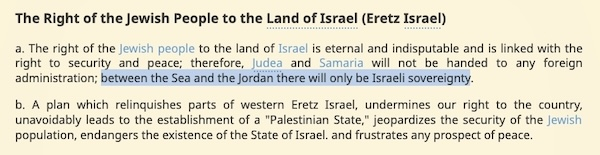
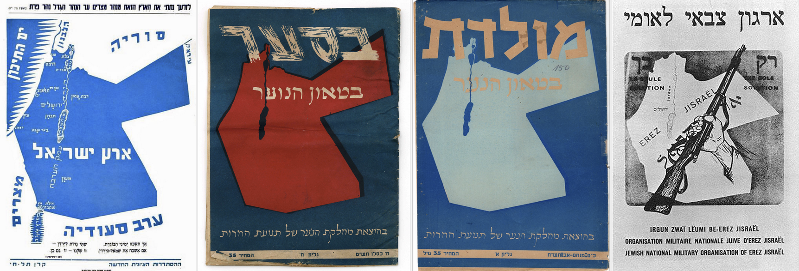

2023-11-05 08:00

Poster in Wing’s Court, New Bedford (Author, 2023)
The Anti-Defamation League (ADL) considers the call for Palestinian liberation — “from the river to the sea” — to be both anti-semitic and an endorsement of terrorism:
“This rallying cry has long been used by anti-Israel voices, including supporters of terrorist organizations such as Hamas and the PFLP, which seek Israel’s destruction through violent means. It is fundamentally a call for a Palestinian state extending from the Jordan River to the Mediterranean Sea, territory that includes the State of Israel, which would mean the dismantling of the Jewish state. It is an antisemitic charge denying the Jewish right to self-determination, including through the removal of Jews from their ancestral homeland.”
But it’s not quite so simple as the ADL would have it, and accusations like theirs are symptomatic of a new McCarthyism that demonizes people who recognize that the Palestinian-Israeli conflict simply cannot continue without a just resolution, and that the root cause has always been the injustice of oppressing Palestinians.
Setting aside for a moment the terror required to subjugate millions of people for three generations in prisons, reservations, city-sized ghettos, or refugee camps weaponized into concentration camps, let’s consider the terror of only the last month.
Long before we heard an Israeli general call Palestinians human animals and long before our jaws dropped as a member of the Knesset demanded a doomsday nuclear strike on Gaza, fatalities related to Israel’s occupation were already over 10,000. Craig Mokhiber, a UN human rights official who recently resigned in protest, called Israel’s actions in Gaza “a text-book case of genocide.” US State Department Political-Military affairs analyst Josh Paul resigned in protest over US aid to Israel, while State Department foreign affairs specialist Sylvia Yacoub wrote a policy dissent, warning that the US is “complicit in [Israeli] genocide.”
Plans for dropping the entire population of Gaza in the Sinai desert — which an intelligence report called the “final rehabilitation” — were published in even the Israeli news. And now that Israel has surpassed Hamas’s terror by slaughtering another 10,000 civilians (with another 2,200 missing and presumed buried under rubble) and has imprisoned 10,000 Palestinians without charges versus the 200 kidnapped by Hamas, it’s clear that the winner of the terror sweepstakes is Israeli state terror — aided, abetted, and funded by US tax dollars.
Subject to steady encroachment by violent fundamentalist settlers who refer to it as Judea and Samaria, the West Bank has for decades avoided total annexation by Israel and represents an inconvenient impediment to a contiguous span of entirely Israeli territory. If Israel’s extremist government succeeds in their stated goal of full annexation of the West Bank and completes its task of ethnically cleansing Gaza, it will mean the death of any sort of Palestinian state and the denial of self-determination for Palestinians. But that has been the objective of Zionism since the beginning.
You’ve got to hand it to the ADL — which has moved over the years from sounding the alarm on discrimination against Jews to becoming little more than a pro-Israel mouthpiece — for the consistency of its hypocrisy. The ADL regards any challenge to or criticism of Zionism to be anti-semitic. Protests are anti-semitic. Boycotts are anti-semitic. Calls for freedom and liberation are anti-semitic. Murals like the one in Wing’s Court, New Bedford (image above), which use the dreaded phrase must also be anti-semitic.
But is there really anything objectionable in “from the river to the sea” — other than the obvious shorthand for borders, as Americans might use “coast to coast” or “sea to shining sea”? Or is it because American protesters, many of us Jews, are allies in pushing for Palestinian freedom? Such accusations and pushback from pro-Israel mouthpieces like the ADL are precisely like the segregationists who had derisive names for whites who supported civil rights. One was “race traitor” and the other ended in “—lover.”
As it happens, the word “river” never actually appears in the original Hamas Charter, which is indeed an offensive document rivaling equally offensive Zionist documents like Jabotinsky’s Iron Wall or the propagandistic and racist pseudoscience coughed up by Yair Netanyahu, the Prime Minister’s son and Israel’s Eric Trump.
But the 2017 Hamas Charter does contains two mentions:
“Palestine, which extends from the River Jordan in the east to the Mediterranean in the west and from Ras al-Naqurah in the north to Umm al-Rashrash in the south, is an integral territorial unit.”
and another sentence uses the ADL’s censored words:
“Hamas rejects any alternative to the full and complete liberation of Palestine, from the river to the sea.”
Interestingly, the Likud uses similar language in its 1977 platform, which calls for complete Jewish control of all of Palestine between the river and the sea, and specifically rules out a Two State solution:
from Jewish Virtual Library
“Judea and Samaria [the West Bank] will not be handed to any foreign administration; between the Sea and the Jordan [river] there will only be Israeli sovereignty.”
Israel’s Revisionist Zionist movement, the progenitor of Netanyahu’s Likud party, had greater territorial ambitions than a state bounded on the east by the Jordan River. In pre-1948 posters from the Irgun, the Harut youth movement, and in fundraising appeals to North American Zionists and others, Revisionist Zionists used a verse from Bereshit (Genesis) 15:18 which refers to the Euphrates river, not the Jordan:
On that day, the Lord formed a covenant with Abram, saying, “To your seed I have given this land, from the river of Egypt until the great river, the Euphrates river.
That biblical quote appears at the top of the left-most poster shown below with the caption “Land of Israel” and in another Irgun poster advocating taking not only the portion of the British Mandate reserved for Jews and Arabs (west of the Jordan) but Transjordan (present-day Jordan) as well — by force:
Left to right: 1947 Irgun map; Herut youth movement; Tel Chai fund; Irgun Poster showing all of Transjordan as “the only solution”
The Revisionists, and every bible-thumper they appealed to, were no doubt also familiar with verse 13:
And He said to Abram, “You shall surely know that your seed will be strangers in a land that is not theirs, and they will enslave them and oppress them, for four hundred years.”
Whatever the origins, and whoever has adapted or used it in some variation, “From the river to the sea, Palestine will be free” is now used by peace activists — anti-Zionist rabbis among them — to signify liberation and justice for Palestinians in both Gaza (which borders the sea) and the West Bank (which touches the Jordan but is an occupied military zone).
For many the phrase is simply an affirmation — long denied — of a Two State Solution that successive US administrations give frequent lip service to. For some of us it’s the recognition of both the futility of Two States and the impossibility of continuing to support an Apartheid state while denying any kind of statehood to Arabs. A bi-national secular democracy uniting Jews and Arabs in a single secular state could be a solution. Israel, as a Zionist nation built on an Apartheid model, would cease to exist. And so would Hamas’s dreams of an Islamic state.
In any case, just as Israel still has no Constitution after 75 years, it also has no internationally recognized, undisputed borders. Perhaps the best anyone can do is to speak of the river and the sea and the possibilities of freedom in between.